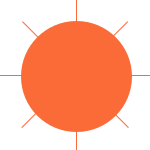

sunseek3rr.
Sébastien D'Agostin - Web Designer
(scroll)
Projets
Janus
Un projet visant à stimuler l’esprit critique, à créer du contenu répondant à une remise en question, pour finalement le présenter au travers d’une interface accessible.
Dataplay
Création d’une expérience interactive basée sur un jeu de données, la conception de sa présentation et de son identité graphique.
RUX
RUX ou Rethinking UX est un projet étudiant visant à analyser et comprendre un besoin utilisateur en dehors des écrans, mais avec la même méthodologie.
Design Fiction
Imaginer un événement, une technologie ou encore une manière de vivre dans un futur relativement proche afin d’en voir les résultats/débouchées possibles.
À propos
J’ai choisi de faire du Web car je m’intéresse initialement à la psychologie et à la manière dont nous pouvons utiliser les outils de communication de la manière la plus fiable, honnête, éthique et bienveillante.
Alors qu’aujourd’hui nous nous perdons souvent à travers des publicités mensongères, des “fake-news”, des informations incomplètes et/ou non vérifiées et parfois même omises par choix, il est très important pour moi de pouvoir participer au rétablissement d’un mode de communication centré sur l’utile et la nécessité, qui prends en compte l’humain, ses besoins, et les objectifs communs découlant de l’unité.
Mon but est d’abord de comprendre, de la manière la plus précise, votre but et vos ambitions afin de les transformer en contenu accessible à votre audience et ainsi de faciliter l’échange.
Compétences
Contact
Je suis actuellement à la recherche d’un stage professionnel afin de finaliser mon bachelier en Design Web Transmédia.
Si vous êtes intéressé par mes compétences ou mon approche n’hésitez pas à me contacter ci-dessous !
Me contacter